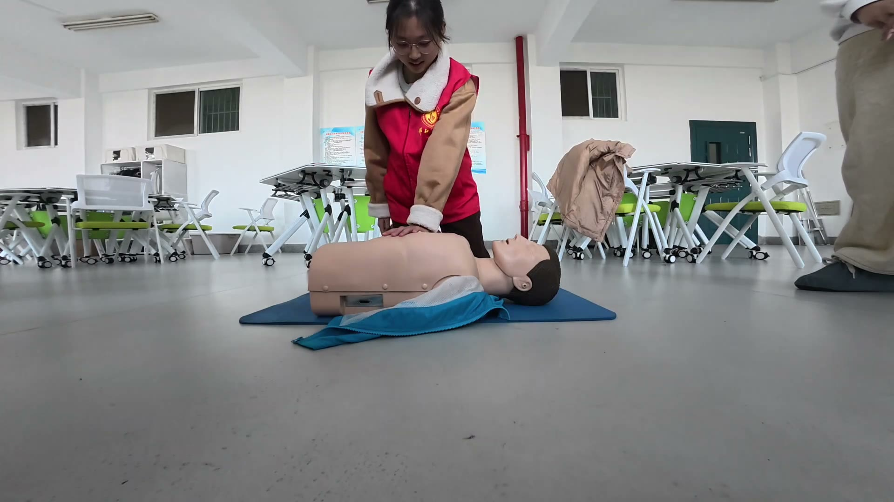
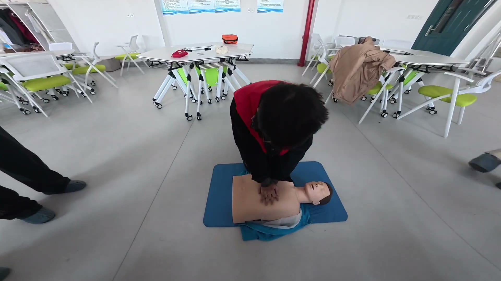
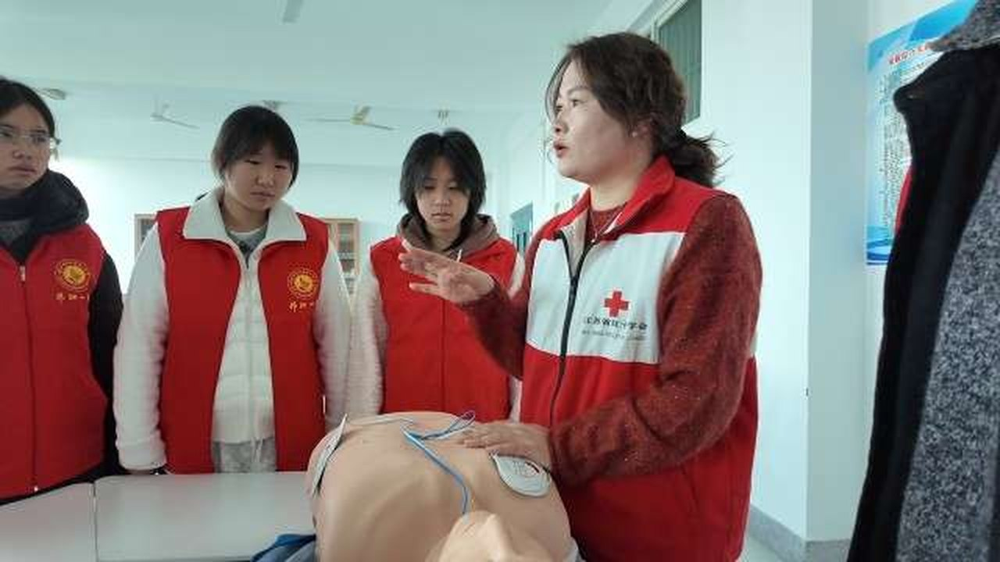
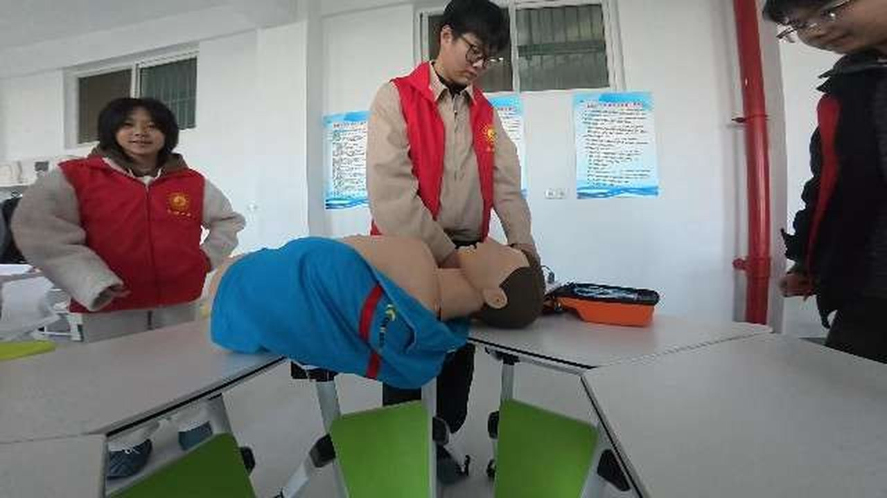
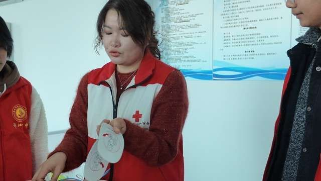

2026.11.22 · 08:00 · 江海学院
一堂课，
练的是怎么把人叫回来
江苏省红十字会应急救护培训 · 一上午，学会在四分钟里做对四个动作。
邗江一中「研急救之策，筑护城之心」课题组
为什么去
133 份问卷
量出了三处断点
0%
知道有 AED
但找不到它在哪
但找不到它在哪
0%
担心用了
反而要担责
反而要担责
0%
敢说
自己真的会操作
自己真的会操作
问卷能说明「断在哪」，说不出「为什么断」。
所以这趟不去发问卷，去问手里拿着机器、平时教人用机器的人。
约了九天
从「周日上午可以吗」
到「明早 8 点西门」
11.13
第一次联系红十字会。那阵子刚考完期中，组里时间一直对不上。
11.20
主任回复：周日上午可以，人在江海学院。
11.21 18:46
老师定了集合点 · 江海学院西大门。
11.21 22:07
群里通知：明早 8 点到西门。有人算了一下，要坐一个多小时车。

11.22 · 06:53 出发
八点，西门
校区在城郊，周围是田。
最近的小卖部要走一段，有人干脆没吃早饭。
那天主任要赶朋友的婚礼，还是先到门口，把我们交给老师才走。
前一晚 23:24
我们把三个月的疑问
写成了一份提纲
发到群里时已经快十二点，后面跟了一句：「如果有机会，明天咨询一下。」
配了多少台？
市民怎么查到离自己最近的那一台
一年培训几个人？
谁能来学，学校能不能排上
用了要担责吗？
民法典 184 条在现场到底怎么算
电极片谁换？
过期了有没有人知道
08:03 · 开始
老师来了，课就开始了
先讲一遍流程，再上手。假人只有一个，轮着来。






09:05 — 13:44
52 段素材，
剪成 54 秒
00:00 / 00:54
从 36 段有效素材里挑 8 个分镜，做了稳定和统一调色。
0
段现场视频
0
张现场照片
0
条群内讨论
还没答完
四个问题
现场答上了三个
01设备在那儿，人知道在哪吗？
答上了：靠标识，也靠口口相传，没有统一查询入口。
02培训过的人，为什么还是不敢用？
答上了：手会生。一年不练，就不敢按下去。
03真出了事，救人的要不要担责？
答上了：民法典 184 条兜底，但现场几乎没人知道。
04电极片的保质期，谁在盯？
没答上：这台机器归谁管、多久巡检一次，还要再问。
带回来的
数据之外的
四件小事
按压要 5 到 6 厘米
太轻没用，太深会断肋骨。老师说，宁可深一点。
电极片贴上去前，先擦干
胸毛、汗水、贴片位置，都会让机器说「不建议电击」。
电击那一下，所有人离开
机器会自己喊。但那一刻人会愣，需要有人喊第二遍。
救完人，别急着走
120 到了要交接，机器要留记录。这些话没人写在说明书上。
接下来
把这些
变成别人能用的东西
01剪一支三分钟科普短片
用现场素材，讲清「找到—打开—贴片—离开」四步。
02做一张图文步骤卡
贴在社区博爱家园和学校医务室。
03补齐维护与追责的缺口
再跑一次红会，问清巡检频次和责任人。
04把 AED 地图和这份汇报一起交出去
给学校、给红会，也给下一个做这个题的人。
研急救之策，筑护城之心。